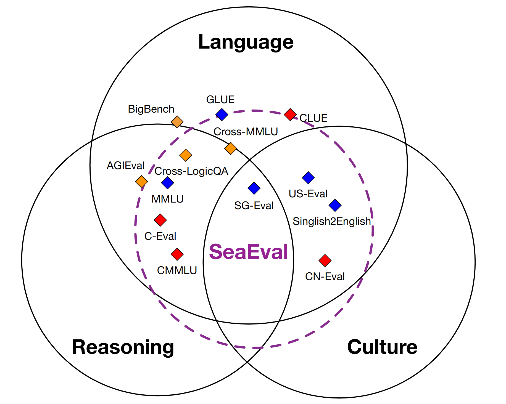
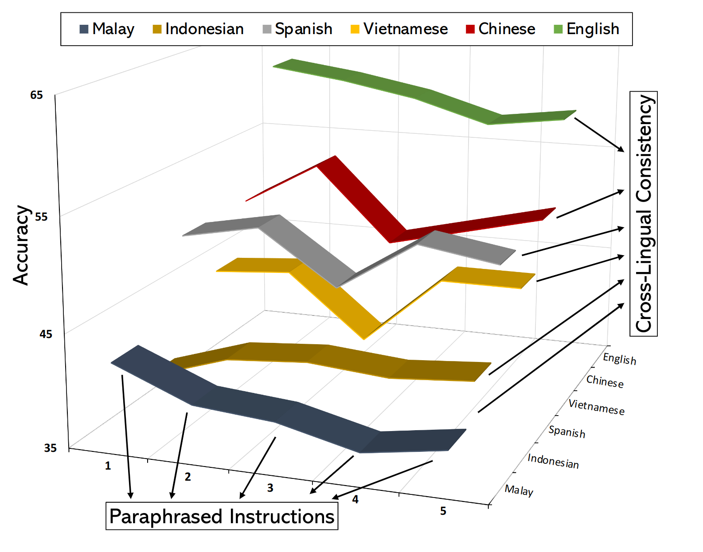

All datasets are accessible on Huggingface.
The paper is available on ArXiv.
Evaluation scripts for your model are readily accessible. Try Now!
Star
Please send us a brief description of your model (e.g., paper link) and model outputs to seaeval_help@googlegroups.com.
If you have any questions, feel free to leave us a message on GitHub or email us at seaeval_help@googlegroups.com.
Bin Wang
Zhengyuan Liu
Xin Huang
Fangkai Jiao
Yang Ding
Ai Ti Aw
Nancy F. Chen
Siti Umairah Md Salleh
Siti Maryam Binte Ahmad
Nabilah Binte Md Johan
Geyu Lin
Xunlong Zou
Wiwik Karlina
Xuan Long Do
Fabian Ritter Gutierrez
Ayrton San Joaquin
Nov. 2023: We released a new cultural understanding dataset for the Philipines!
Nov. 2023: Test results on hiddent test set are available!
Nov. 2023: Cross-Lingual datasets are now supporting 7 languages!
English, Chinese, Indonesian, Spanish, Vietnamese, Malay and Filipino!
Nov. 2023: We launch this benchmark website! Want your model to be included? Let us know!
Sep. 2023: The first version of our paper is on ArXiv. Check it out!

A new benchmark for multilingual foundation models consisting of 28 dataset.

Evaluation with enhanced cross-lingual capabilities.